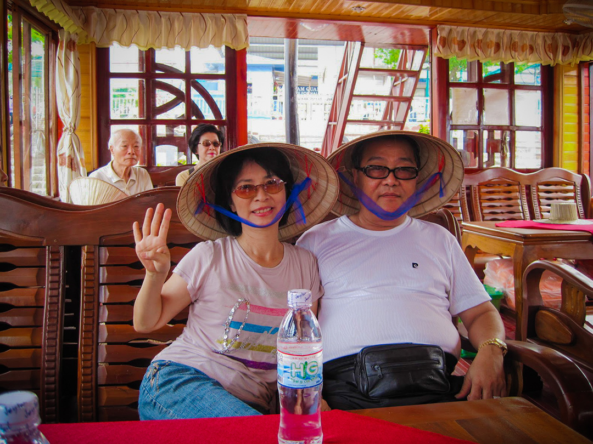

-
帶爸媽出國玩
努力工作省吃儉用，隔了快三年~選了便宜的越南旅遊，那時的越南還有點落後，滿街按著喇叭的摩托車，混濁的空氣與凌亂的車流，但食物意外的非常合胃口 :)
下龍灣壯闊，但我更愛陸龍灣——坐著小船穿梭群山與水道之間，彷佛置身在山水畫中~就是熱了點XD
有一晚老爸還買了一箱啤酒，三五團友與導遊談天說地，成了旅程最意外、也最暖的收穫。# 越南・下龍灣碼頭
-
候機室暖身，準備展開這趟旅程 :)
-

爸媽來一張牽手照~
-
甲板合照，下龍灣的風景真特別。
# 下龍灣・遊船甲板
-
斗雞石作背景，完美！
# 下龍灣・斗雞石（Hòn Gà Chọi）
-
登島打卡，海風自帶濾鏡。
# 下龍灣・提督島（Ti Top Island）
-
登上小島制高點，海風吹起好清爽。
# 下龍灣 Ti Top 島觀景台
-
木屋內乘涼，時光彷彿靜止了。
# 河内・古宅餐館
-
哈囉小妞~來份米皮捲！
# 河内・越式料理體驗（Bánh cuốn）
-
雙槳慢搖，群山跟著走。
# 陸龍灣
-
撐傘乘小舟，稻田水道慢游。
# 陸龍灣
-
古寺門前，福氣滿滿。
# 北越・古寺廟
-
戴上斗笠，Titop島旅人認證。
# 下龍灣 Ti Top 島
- 
老媽: 今天是旅遊第四天 ^^
# 下龍灣 遊船船艙
-
巨龍雕椅太霸氣，坐著感受像貴族。
# 河內近郊 手工藝中心
-
跟團必備 - 購物點
# 刺繡工坊（河內近郊）
-
氣候太熱了~上遊覽車都要趕緊補水 :)
# 河內—下龍灣 觀光巴士
-
河內文廟打卡，滿滿書卷味。
# 河內 文廟（Văn Miếu）
-
西湖邊鎮國寺，紅塔映綠波。
# 河內 鎮國寺（Trấn Quốc）
-

來張街景照，鐵軌就在民房旁
-
Titop 島大合照，笑得比海風吹更開。
# 下龍灣 TiTop 島
-
河內三輪車初體驗
# 越南 河內｜舊城區三輪車